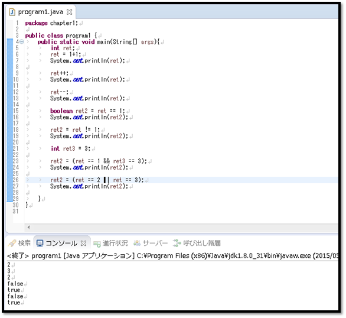

こんにちは。明月です。
演算子とはそのとおり計算する記号と意味です。普通で数学で使う演算子と同じく、プログラム上でも同じ意味で使っています。
基本的に算数の加算「+」、減算「-」、掛け算「*」、割り算「/」があり、余り「%」、比較記号「<」,「>」、論理演算子「%%」、「||」、イコール「==」があります。
| 演算子 | 使用方法 | 説明 |
|---|---|---|
| 算術演算子 | ||
| ++ | ++a, a++ | 値を一つ加算します(前置演算子、後置演算子) |
| -- | --a, a-- | 値を一つ減算します(前置演算子、後置演算子) |
| + | a + b | 加算 |
| - | a - b | 減算 |
| * | a * b | 掛け算 |
| / | a / b | 割り算 |
| % | a % b | 余り |
| 関係演算子 | ||
| > | a > b | 「a」が「b」より大きいなら「true」を返還、小さいか同じなら「false」を返還 |
| >= | a >= b | 「a」が「b」より大きいか同じなら「true」を返還、小さいなら「false」を返還 |
| < | a < b | 「a」が「b」より小さいなら「true」を返還、大きいか同じなら「false」を返還 |
| <= | a <= b | 「a」が「b」より小さいか同じなら「true」を返還、大きいなら「false」を返還 |
| == | a == b | 「a」と「b」が同じなら「true」を返還、違うなら「false」を返還 |
| != | a != b | 「a」と「b」が違いなら「true」を返還、同じなら「false」を返還 |
| 論理演算子 | ||
| << | a << b | 整数「a」の２進数値を左側に「b」ほど移動させ、余りは「0」にする。 |
| >> | a >> b | 整数「a」の２進数値を右側に「b」ほど移動させ、余りは正数は「0」、負数は「1」にする。 |
| & | a & b | 「a」と「b」の論理「and」計算 例) 4(0100) & 5(0101) = 4(0100) |
| | | a | b | 「a」と「b」の論理「or」計算 例) 4(0100) | 5(0101) = 5(0101) |
| ^ | a ^ b | 「a」と「b」の論理「xor」計算 例) 4(0100) ^ 5(0101) = 1(0001) |
| 代入演算子 | ||
| += | a += b | 「a = a + b」と同じ意味 |
| -= | a -= b | 「a = a - b」と同じ意味 |
| *= | a *= b | 「a = a * b」と同じ意味 |
| /= | a /= b | 「a = a / b」と同じ意味 |
| %= | a %= b | 「a = a % b」と同じ意味 |
| &= | a &= b | 「a = a & b」と同じ意味 |
| |= | a |= b | 「a = a | b」と同じ意味 |
| ^= | a ^= b | 「a = a ^ b」と同じ意味 |
| <<= | a <<= b | 「a = a << b」と同じ意味 |
| >>= | a >>= b | 「a = a >> b」と同じ意味 |
| 三項演算子 | ||
| ? | a = (b == c) ? d : e | 「b」と「c」が同じなら「a」変数に「d」値を代入、「b」と「c」が違いなら「e」値を代入 |

先に変数は「int」型の「ret」、「ret3」、「bool」型の「ret2」を生成しました。
初めの数式は「ret」変数に「1 + 1」を入れました。結果は「2」になります。
２つ目、３つ目は増加、加減式ですね。２の値を増加すれば「3」になるし、加減すると「2」に戻ります。
４つ目、５つ目は「bool」の値を入れました。４つ目は「false」、５つ目は「true」の値が出ます。
ret3の変数に「3」の値を入れて値を引くして各の値が出力しました。
「Study / Java」の他投稿
- [Java] Java servletでインスタンスを初期する方法2019/10/17 07:15:48
- [Java] Spring web frameworkで発生する文字化けのEncoding設定2019/10/16 07:32:55
- [Java] Web Spring frameworkでfilter設定2019/10/15 20:12:35
- [Java] Web serviceのweb.xmlでエラーページ設定2019/10/14 20:13:44
- [Java] JPAのDAOをFactoryパターンで管理する方法2019/10/13 22:55:52
- [Java] JPAのSpring frameworkで依存性注入する方法2019/10/13 00:40:08
- [Java] JPAでDAOを生成する方法2019/10/11 07:30:14
- [Java] JPAでトランザクションの使用方法とオブサーバーパターンで共通トランザクション関数を作り方2019/10/10 07:29:43
- [Java] JPAのQuery を作り方2019/10/09 07:34:08
- [Java] JPAのEntityクラス設定(Cascade, fetch)2019/10/08 07:43:33
- [Java] JPAでpersistance.xml設定とentityクラス設定(@GeneratedValue設定)2019/10/07 07:38:13
- [Java] EclipseでJPAフレームワーク設定する方法2019/10/04 19:24:43
- [Java] Web spring frameworkのJSPで使う言語 JSTL - XML2019/10/03 20:02:06
- [Java] Web spring frameworkのJSPで使う言語 JSTL - 関数、データベース2019/10/02 21:00:22
- [Java] Web spring frameworkのJSPで使う言語 JSTL - コアー、フォーマッティング2019/10/01 21:48:08
最新投稿
- [Java] メール(javax.mail)を発送する方法2020/03/05 20:07:49
- [Java] クラス複製(Clonable, Reflection)2020/03/05 00:03:19
- [Java] シリアライズ(直列化: Serializable)2020/03/03 00:03:33
- [Java] StringBuilderとStringBufferの差異2020/03/02 07:52:22
- [Java] Compare関数を使う方法2020/02/29 03:00:00
- [Java] 数字フォーマット(お金表示及び小数点以下表示)2020/02/28 03:00:00
- [Java] サーブレット環境で現在の実行ディレクトリを取得する方法2020/02/27 03:00:00
- [Java] 日本語をユニコードに変換して、ユニコードから日本語に変換する方法2020/02/26 03:00:00
- [Java] コンソールからデータを受け取る方法(System.in)2020/02/25 03:00:00
- [Java] Servlet環境でWebSocket通信中、HttpSessionを取得する方法2020/02/24 07:47:20
- [Java] WebSocketでWeb Sessionを使う方法(Broadcast)とウェブチャットの例2020/02/22 03:00:00
- [Java] WebSocket (ウェブソケット)2020/02/21 03:00:00
- [CakePHP] Errorページを設定する方法2020/02/20 03:00:00
- [CakePHP] Transactionを使う方法とEntityクラスを利用してInsert、Update、Deleteする方法2020/02/19 03:00:00
- [CakePHP] ORMのテーブルFetch設定2020/02/18 03:00:00